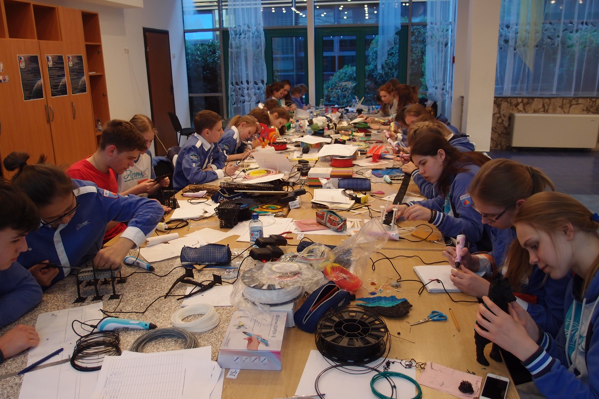

Аддитивные технологии
3D-принтеры в школах
В классе за компьютерами сидят учащиеся и моделируют свои проекты, а потом включают 3D-принтер и печатают модель. Это уже давно не фантастика, а реальные результаты внедрения 3D-принтеров в школах. В каких предметах можно применить 3D-принтер для обучения?
Поскольку в школах скоро будет утверждена новая программа, то 3D-принтер будет использоваться на уроках труда для прототипирования изделий, создания макетов и реализации собственных проектов учащихся. А еще на нем можно напечатать ящички для мелочей, приспособления для пайки и крепления для инструментов.

Еще один кабинет, в котором обязательно должен быть 3D-принтер, это компьютерный класс.
Изучение 3D-моделирования без компьютера невозможно, тем более что для работы с 3D-принтером нужна специальная программа – слайсер – которая преобразует 3D-модель в рабочую программу для принтера.
На уроке химии для наглядности учитель показывает 3D-модели молекул. Или проводит реакцию, используя напечатанную посуду (разумеется, реагенты не должны реагировать с пластиком). В конце концов, можно выдать каждому ученику задание напечатать себе пробирку и проводить в ней реакции.
Физик демонстрирует электрическую цепь на свежераспечатанном токопроводящем стенде. Именно так выглядит применение 3D-принтера в кабинете химии или физики.

3D –ручка на уроке изобразительного искусства – почти обязательный атрибут для развития пространственного мышления. Сейчас уроки ИЗО в основном проходят только в “плоскости”, не считая, конечно, лепки из пластилина (что грубее, чем рисование 3D-ручкой).
Конечно, ручка это не полноценный 3D-принтер, зато ручками можно снабдить каждого ученика в классе из-за их относительно небольшой стоимости.
В качестве примера нового стандарта обучения можно взять пример “инженерного” класса. Это больше применимо к школам с уклоном в физику, математику и информатику. В таком классе возможно изучение классических дисциплин технических вузов - приборостроения, машиностроения, конструирования, радиотехники и программирования. Набор оборудования должен соответствовать уровню лаборатории: радиодетали, инструменты для пайки, инструменты для гравировки и выжигания (фреза, лазер), ЧПУ-станки, компьютеры и конечно же 3D-принтер, желательно в комплекте с 3D-сканером.
Одно из основных направлений изучения - робототехника, для этого обычно приобретается комплект Lego Mindstorms, но если большинство комплектующих можно напечатать и собрать, оправдана ли такая покупка? Обычно на занятиях собирают роботов на основе arduino, например SelfieBot или “Умный дом”.
Какие выгоды от освоения 3D-принтера получают обычные учащиеся? В первую очередь, преимущество при поступлении в технические вузы. Также в РФ проводятся олимпиады и конкурсы по 3D-технологиям, победа в которых поможет реализовать собственные проекты учащихся и пойдет в портфолио (Олимпиада по 3D технологиям, WorldSkills). Участие в профильных олимпиадах повышает качество инженерного образования и активность среди учащихся школ.